Композиционные
схемы
Каждый носитель может содержать в себе только одну фигуру, она может быть как внутри носителя, так и выходить в обрез. Фигуры делятся на два типа: автономные и фоновые. Об этом далее в разделе дополнительная графика.
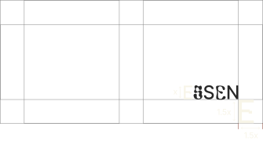margin = 1.5x logo letter
Наружная реклама
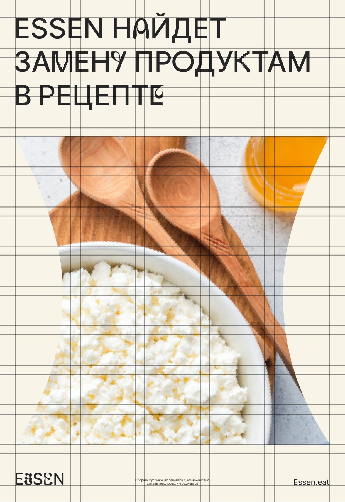
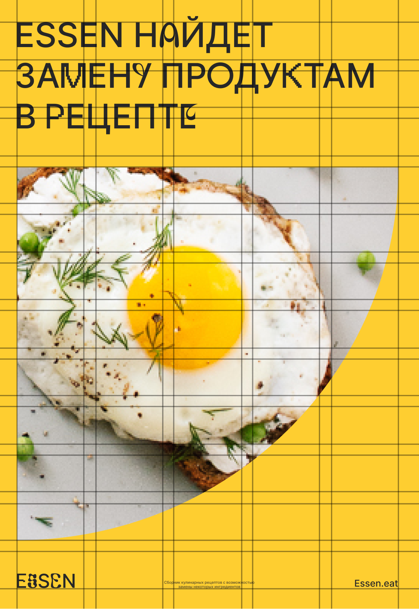
Формат 4:5; используется 5-колончатая сетка
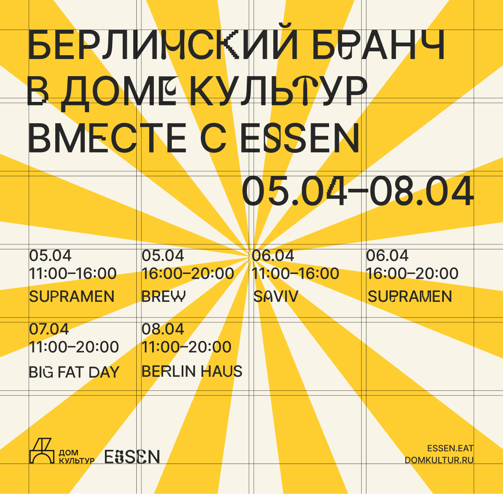
Квадратный единичный постер с автономной фигурой: Формат 1:1; 4-колончатая сетка

Квадратный двойной постер с фоновой фигурой: Формат 1:1; 5-колончатая сетка
Социальные сети
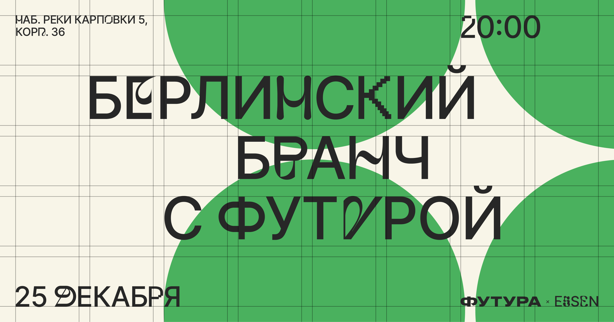 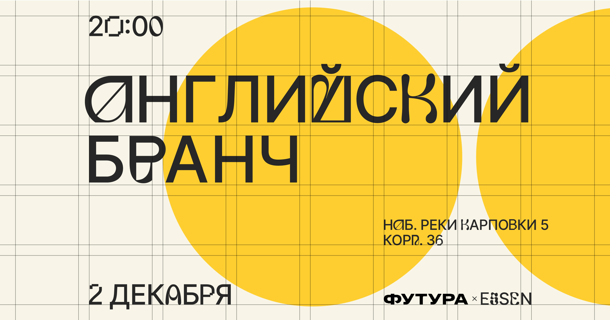Формат 16:9. Используется 8-колончатая сетка
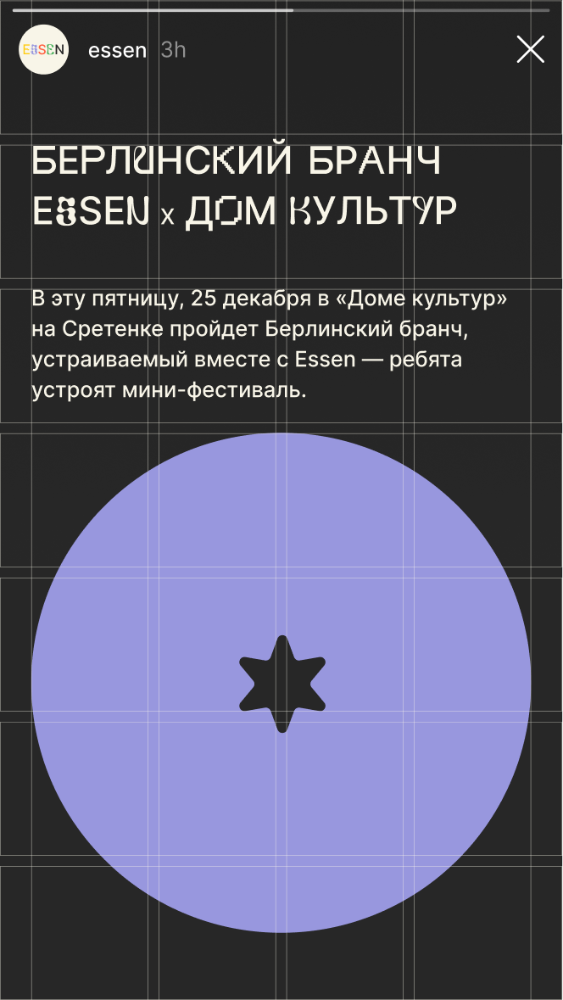

Instagram Stories


 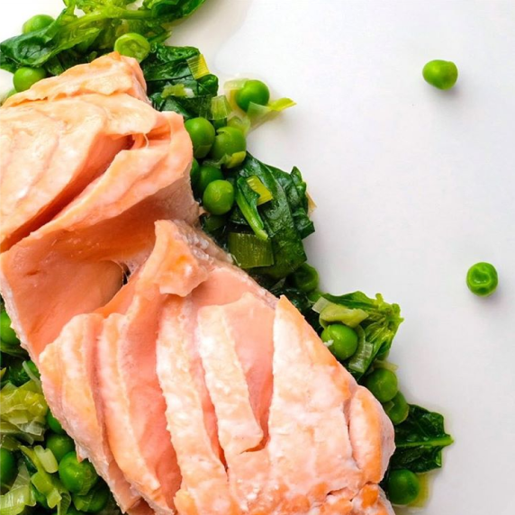
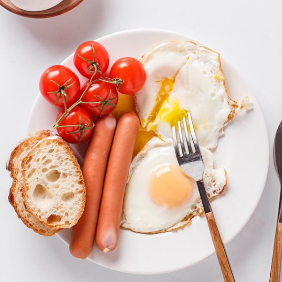
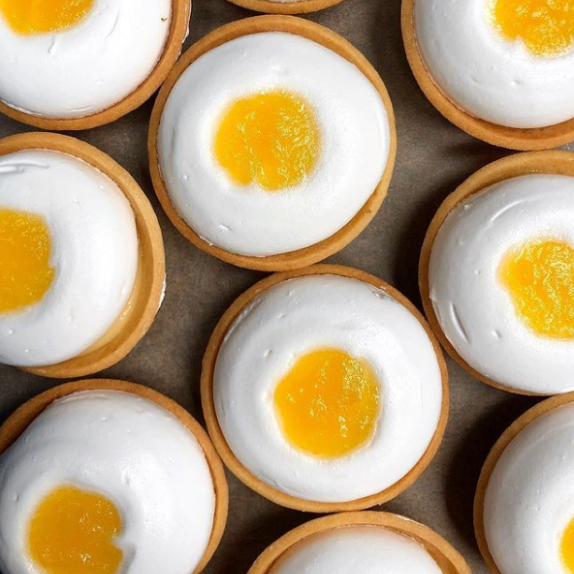
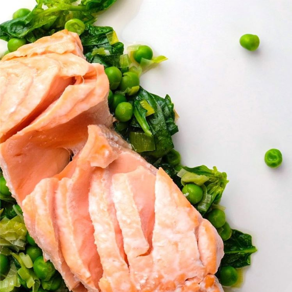
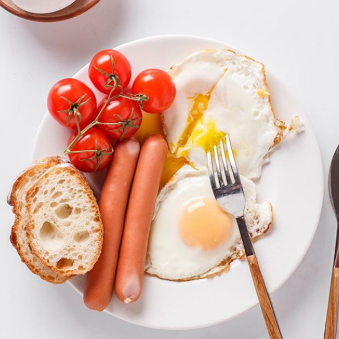
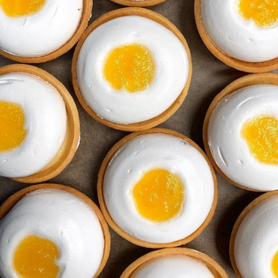